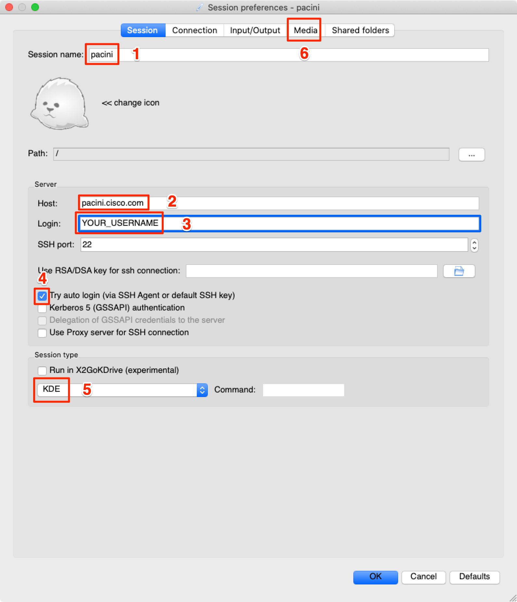
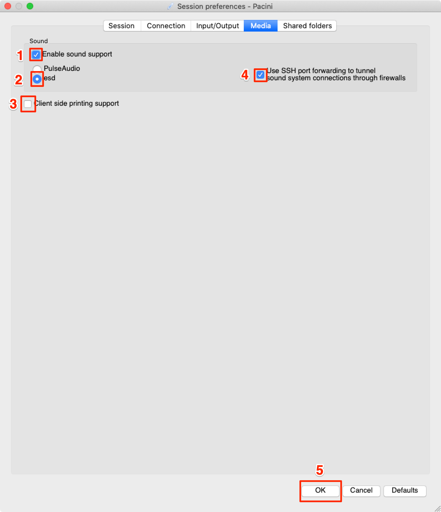

Arcetri
To handle your request faster please provide information about:
- Name
- Preferred account name
- Email address
- Phone number
- SSH RSA public key (see here how to generate SSH key)
If you are a Windows user
1. Check for existing SSH keysOpen a command prompt, and run
cd %userprofile%/.ssh
- If you see "No such file or directory", then there aren't any existing keys: go to step 2.
- Check to see if you have a key already:
dir id_*If there are existing keys, you may want to use those. Go to step 3 to send us your public SSH key
- Log in to your local computer as an administrator.
- In a command prompt, run:
- Just press Enter to accept the default location and file name. If the .ssh directory doesn't exist, the system creates one for you.
- Enter, and re-enter, a passphrase when prompted.
- You're done! Go to step 3 to send us your public SSH key
ssh-keygen -t rsa -C "your_email@example.com"
Associating the key with your email address helps you to identify the key later on.id_rsa.pub file to your account request email.WARNING: send
id_rsa.pub, not id_rsa file! id_rsa is your private confidential key, similar to your passwords!
If you are a Unix/OS X user
1. Check for existing SSH keys
Open the terminal, and run
cd ~/.ssh
- If you see "No such file or directory", then there aren't any existing keys: go to step 2.
- Check to see if you have a key already:
ls id_*If there are existing keys, you may want to use those. Go to step 3 to send us your public SSH key
- Open a terminal on your local computer and enter the following:
- Just press Enter to accept the default location and file name. If the .ssh directory doesn't exist, the system creates one for you.
- Enter, and re-enter, a passphrase when prompted.
- You're done! Go to step 3 to send us your public SSH key
ssh-keygen -t rsa -C "your_email@example.com"
Associating the key with your email address helps you to identify the key later on.id_rsa.pub file to your account request email.WARNING: send
id_rsa.pub, not id_rsa file! id_rsa is your private confidential key, similar to your passwords!
- First, you should install Cisco AnyConnect
- Login with username and password we provided you: https://arcetri-asa.cisco.com
- Press "Continue"
- Wait for Java detection and press on AnyConnect VPN download link
- Open it and type arcetri-asa.cisco.com
- Press ‘Connect’ and enter your login detail
- Now open a terminal and enter the following command:
- Type in your arcetri user name and password and press Enter


$ ssh pacini.cisco.com
- You may access to a Pacini head node (pacini.cisco.com) via the ASA firewall (arcetri-asa.cisco.com).
- The Pacini Head node is a Cisco UCS C240 M4 Rack Server www.cisco.com/c/en/us/products/servers-unified-computing/ucs-c240-m4-rack-server/index.html
- The nodes of the Pacini cluster are connected via the Fabric Interconnect (FI): Cisco UCS 6332 Fabric Interconnect https://www.cisco.com/c/en/us/products/servers-unified-computing/ucs-6332-fabric-interconnect/index.html
- Franco Pacini Compute nodes consist of 3 types of blades:
- B200 M3 IVB
- B200 M4 HW
- B200 BW
- Cisco UCS B200 M4 Blade Server https://www.cisco.com/c/en/us/products/servers-unified-computing/ucs-b200-m4-blade-server/index.html
/home/
/username - mode 0700 - no other user/group access
/usr/global/
/{bin, sbin, lib, include, ...} - common software for Pacini cluster - mod by admin only/_group_name_ - writable for group for software/libs/src/{bin, sbin, lib, ...} - source for common software - mod by admin only/src/_group_name_ - writable for group for source code
/shared/
/_group_name_ - writable by group for source code
Modules
In general, modules are designed to create user's environment. For example, if you need to use CUDA with version 8.0,
you can easily load appropriate module via command module load CUDA/8.0
Load CUDA/8.0 module is better than just have it installed by default because some researchers may need 9.0 version while others need to have 8.0 CUDA. Creating modules for both versions help to avoid such collisions.
You can check available modules via command module avail
Right now pacini has these modules:
- CUDA/8.0
- CUDA/9.0
- gcc/5.4.0
- gcc/6.3.0
- gcc/7.1.0
- go/1.7.6
- go/1.8.3
- intel/2017u4
- libfabric/1.4.2
- matlab/2016b
- matlab/2017a
- meep/1.3
- mpi/openmpi/1.10.7
- mpi/openmpi/2.0.3
- mpi/openmpi/2.1.1
- mpi/openmpi/2.1.1-intel
Feel free to contact us and request a new module: our contact page
module add MODULE_NAME
module list
module rm MODULE_NAME command unloads specific modulemodule purge command unloads all loaded modulefiles
module add MODULE_NAME- load a modulemodule list- show loaded modulesmodule rm MODULE_NAME- unload a modulemodule purge- unload all loaded modulesmodule show MODULE_NAME- show information about a modulemodule avail- list all available modulesmodule help- give some helpful information aboutmodulecommand
SLURM
Via batch script
- Create a .slurm file with parameters for the job
- Type in the command
$ sbatch yourfilename.slurm
Via interactive ssh job
- Submit your job using the following format:
$ sbatch --ntasks=1 --time=2:00:00 --mem-per-cpu=1G --job-name="$NAME" --qos=normal --export=ALL
After you launch your job you could monitor its progress using the following command:
$ squeue --job JOB_ID
This command will show your jobs' progress in the following format:
JOBID PARTITION NAME USER ST TIME NODES NODELIST(REASON)
34239 arcetri_c node-rie prime R 1:49:52 1 pacini063
squeue - list all job numbers
sprio -j JobID - show priorities for the current job
sinfo - show detailed info about the nodes
- The amount of resources that you have requested is currently unavailable
- A job with higher priority than yours is running
- SLURM maybe still executing your request
$ scancel JobID
Where JobID is the unique id of your job (for help finding you JobID, see
here)
Arcetri resources
- 96 compute nodes in total
- 32 nodes with Tesla GPUs:
pacini063-pacini095 - 256GB of RAM each
IB group
- 32 nodes:
pacini000-pacini031 - 20 CPU cores per node
- 32 nodes:
pacini032-pacini063 - 24 CPU cores per node
- 32 nodes:
pacini064-pacini095 - 28 CPU cores per node
sbatch job_batch_script.msub - submit job
defined in job batch script in current directory
sbatch parameters - ask for
interactive SSH session with specified parameters
showq - show queue info about all users
sinfo - show detailed information about compute nodes
Read more about SLURM: here
Graphical desktop
Installation
First, you should convert your .ppk key to .ssh key- Download PuTTY Key Generator (puttygen.exe) from the following URL: https://www.chiark.greenend.org.uk/~sgtatham/putty/latest.html
-
Launch the program and click on the Load button and select your id_rsa.ppk file.


-
Enter the key's passphrase if prompted.

-
Detail's of the imported key will be displayed.
-
Go to Conversions → Export OpenSSH key from the menu.

-
Save your converted key to a new file named "id_rsa"
- Windows http://code.x2go.org/releases/X2GoClient_latest_mswin32-setup.exe
- Official page http://wiki.x2go.org/
If you are using key with password encryption
Steps:
- Input saved profile name (local identification for your personal use)
- Input Pacini domain name
- Input your username (also used for SSH)
- Tick “Try auto login” checkbox
- Make sure you have “MATE” selected as session type
- Select “Media” tab for next settings
If you are using password authentication or key without password encryption:
Steps:
- Input your private key path
- Make sure you have “MATE” selected as session type
- Select “Media” tab for next settings
Media settings
Steps:
- Check "Enable sound support"
- Check esd radio button
- Uncheck client side printing option
- Save dialog settings by selecting “OK”
Connection
Select created profile to connect to Pacini
Click the session card to start the session

You should see full desktop on Pacini

Matlab
Open Terminal
- Load desired version of Matlab by “module load” command.
- Launch Matlab
Matlab should be up and running by this point.
To end the session

Installation
Requirements:- MacOS X 10.6 and up
- Xquartz - Download Xquartz for macOS here
- MacOS X 10.6 and up http://code.x2go.org/releases/X2GoClient_latest_macosx.dmg
- MacOS X 10.9 and up http://code.x2go.org/releases/X2GoClient_latest_macosx_10_9.dmg
- Official page http://wiki.x2go.org/
If you are using key with password encryption
Steps:
- Input saved profile name (local identification for your personal use)
- Input Pacini domain name
- Input your username (also used for SSH)
- Tick “Try auto login” checkbox
- Make sure you have “MATE” selected as session type
- Select “Media” tab for next settings
If you are using password authentication or key without password encryption:
Steps:
- Input your private key path
- Make sure you have “MATE” selected as session type
- Select “Media” tab for next settings
Media settings
Steps:
- Check "Enable sound support"
- Check esd radio button
- Uncheck client side printing option
- Save dialog settings by selecting “OK”
Connection
Select created profile to connect to PaciniClick the session card to start the session
You should see full desktop on Pacini
Matlab
Open Terminal- Load desired version of Matlab by “module load” command.
- Launch Matlab
Matlab should be up and running by this point.
To end the session
Python
$ virtualenv my_projectThe name of the virtual environment (in this case, it was my_project) can be anything; omitting the name will place the files in the current directory instead.
$ source my_project/bin/activateWhere my_project is the environment folder.
The name of the current virtual environment will now appear on the left of the prompt (e.g.
(my_project)UserName$) to let you know that it’s active.
From now on, any package that you install using pip will be placed in the my_project folder, isolated from the global Python installation.
$ deactivateThis puts you back to the system’s default Python interpreter with all its installed libraries.
- While creating an environment:
- Or change the interpreter globally with an env variable in ~/.bashrc
$ virtualenv -p /usr/bin/python2.7 my_project
$ export VIRTUALENVWRAPPER_PYTHON=/usr/bin/python2.7